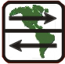

Ecuador




Quito and more[12. June 2008] All this bad prejudice, about aggressive dogs, indifferent and unfriendly people and bad weather. All completely wrong. Our first cycling days in Ecuador were full of sunshine, very friendly people and lazy dogs laying around and not attacking us at all. The good conditions gave us the necessary motivation we needed to keep on cycling. After the hard last days in Colombia our legs were still tired and the topography, not surprisingly, did not change with the crossing of the political boarder. Ecuador is different, strange in many ways and nice in many ways too. There are the friendly but not very smart policemen who wave us through the toll booth hastily, forgetting that the barrier swings down quite fast. This once resulted in a very “head-banging” experience for Pius and the confirmation that it’s a good idea to always ride with a helmet on... There are these other not-so-smart guys in hotels who don’t have the key to the room when we come back at eleven in the night. But necessity is the mother of invention. The guard showed us how to climb on the balcony via the window of the adjoining room and there – what a nice surprise – we could push open the window of our room and enter… Definitely on the negative side for cyclists is the fact that trucks here produce the same (incredible) amount of black exhaust as in Colombia, but here the exhaust pipe is either on the right side of the truck, right into our face, or they have two exhaust pipes, one on top and the second, guess, on the right, right into our face. We still did not find out what this could be good for. In the evening our faces are covered with a black sweat-grime-layer. We don’t want to imagine how our lungs look like… On the good side, besides the still very friendly people, are the incredible cheap living costs. In the market we can get a proper meal with fruit juice for 0.75 Dollars, a flat spanner and an adjustable wrench are available for 3.5 Dollars (together) and going to cinema (modern Multiplex in a shopping mall) costs us 1.7 Dollars. Under these conditions, especially with the Dollar being so low, we could go on traveling for years! On the day we rode into Quito a special moment was waiting for us in the morning: breakfast at the equator! After the equator-like picture session (one bike south, one bike north, one guy south, one guy north, etc.) we were ready to drop into one last canyon and climb the final 1000 meters up to Quito. Quito is a big stop for us. Many stories end here, many new ones begin. Andrew’s friend Michael arrived here some days ago and they will cycle through Ecuador together for three weeks. This means we will spend our last days together here and then have to say good bye… but will most probably see each other again further south. For Pius Quito is a very special stop because he could embrace his girlfriend Andrea again for the first time since Guatemala. She has been working in a school here for the past four months and now helps us feel at home in this bustling city. Andrew and Michael live at the same home stay family as Andrea (and Pius); Stefan lives some blocks away at the place of Mercedes, the Couchsurfing ambassador of Quito. When we go out, Mercedes joins us, invites her friend, Andrea invites her German friend, this friend invites two other German friends and we end up being a group of ten persons, very multicultural. Thanks to Couchsurfing (yes, we are fan of it) one evening we were invited to a special kind of party. One of the hosts we contacted invited us to her friend’s birthday party – a costume party. As we do not have that many different things to wear with us, we were invited to come as Panamericana bikers. When we approached the quite posh club in our bike shorts and helmets some people were looking at us in surprise. They wore normal clothes... When we entered the club we first thought this is going to be one of the most embarrassing situations of our lives: people were wearing normal clothes! It took us some time to see the group of people in costumes, somewhere in the middle of the dancing crowd. The evening turned into a crazy dancing session. You might want to have a look at the pictures... Stefan spent a lot of time in the internet cafe working on the new homepage upgrades. Pius enjoyed being with his girlfriend. Together they went for walks in the park and visited the beautiful historic old town. With Andrew and Michael they rode 1500 meters skywards in a cable car to an altitude of 4100 meters to enjoy a breathtaking view of the City and the surrounding green hills. Too soon the time had come to say goodbye again. Even though it’s only for three weeks (we will travel with our girlfriends for one month later) it was not easy to leave after the nice days we spent here. Tom and Denise, who we met in San Augustin already, made their way to Quito very fast and we decided to cycle together for a while. When we left Quito we were a huge bike gang of four recumbents, one biker with trailer and only one “normal” cyclist. One day later we had to say good bye to Andrew and Michael, who will try to cycle as high up the Volcano Cotopaxi as they can and then tour Ecuador by bike together. Good bye Andrew! The guy who we spent two months with, ten percent of our whole tour! The guy who is so American and still very un-American. He can easily eat seven eggs a day without batting an eye but tries to eat as little meat as possible because he is aware of the ecological impact of its production. He can easily say “no thanks” if we offer to give him a hint about his stretching technique but is always eager to learn a lot about bike repairs and technical details. We were always making fun of the other’s country but he is that interested in Switzerland now that we will sure have the pleasure to welcome him there one day. Maybe, maybe he will even arrive there on his bike… Thanks for the great time and the many things we could learn from you, see ya later alligator! Cycling with Tom and Denise was nice and relaxed from the first minute. We ride the same bikes, we speak the same language, we think on the same wavelength. We would have liked to continue cycling with them for the next days, BUT there was this little incident: in the early morning we climb up a steep hill after Ambato, two days past Quito. Pius is in front and breaks to wait for Tom and Denise. Stefan stops right behind him, but he has this startled look on his face. And why is he sitting 30 cm lower than usually? We must have looked very dumbfounded then. Stefan’s bike frame broke in two parts! For the first minutes we could only make sarcastic jokes and we were laughing. But soon we realized what the consequences for our tour will be: saying good bye to Tom and Denise after only two days of riding together, being stuck in not very beautiful Ambato for days, being stuck in Ecuador for days, maybe weeks! We have to get a new frame sent from Holland. The good things: we had time to brush up our webpage for our one-year-anniversary, we can see all the games of Euro 08 we would have missed while cycling and Quito (and therefore Pius’ girlfriend) is only hours away. Let’s just hope we will be in the mood for party on the 12th of June. One year on the road! How long does a recumbent frame last? Almost exactly one year :-) Going on[26. June 2008] Thanks to a nice tip in our guest book (thank you!) we changed our plan completely. Instead of waiting in Ambato for the new frame, go hiking in the area and find other ways to spend the time we took a bus that took us to Cuenca. In this big city we checked out several hardware stores until we found a steel tube that fit into our broken frame. An afternoon-session at a tiny mechanics shop later our frame was fixed and we were ready to roll again. The bus ride from Ambato to Cuenca was a torture for us. We had to fly too fast through the breathtaking landscape, blue sky above us. On the other hand in Cuenca we found the resources to fix our bikes, could stay at a nice place in the historical town center with our Couchsurfing host and we were in the time plan again. We celebrated our anniversary together with our Couchsurfing host and other couchsurfers in the official Couchsurfing bar of Cuenca – on the official Couchsurfing day; what a coincidence! On the first cycling-kilometers after Cuenca we realized how much we love cycling and how important it is to us that our bikes are ready to be ridden. We were super motivated and top fit after the unwanted brake. This combination and the slightly rainy weather (that deterred us from setting up our tents but cycle to the next town) made us cycle more than 320 kilometers in three days. Nothing special if there weren’t these mountains and 6200 meters of altitude gain too… 7.5, 9 and 8.5 hours riding time. On no day did we manage to arrive before darkness, on the second day we even cycled in the dark on a road full of holes for more than one hour. Sounds terrible, no? We liked it :-) Andrea and Pius - Climbing Cotopaxi[3. August 2008] Pius’ and Andrea’s trip was mainly about one thing: climbing Cotopaxi, the highest active volcano in the world. For ten days they acclimatized their bodies by sleeping in Alpine huts and hostels at high altitudes. They climbed mountains like Igualata (4500m), part of the Chimborazo (up to 4700m) or Corazon (4800m). They also went to visit the famous blue-green crater lake of Laguna Quilotoa and walked from there to Chugchilan. The walks to up Pichincha high above Quito and along three lagoons to the thermal springs of Papallacta with a warm bath in the evening completed their “training program”. All these places are in the beautiful Andes of Ecuador. They would have been REALLY nice IF, if only the weather wasn’t so incredibly, constantly bad. Whatever mountain they climbed, they were for sure welcomed by fog on top. The rainy periods were not long though but after several days of cloudy weather without seeing a lot of the nice countryside, motivation wasn’t great always. Ecuador gets one of the worst summers in years, for months the weather is like this but should normally be clear blue sky... The big moment of the Cotopaxi climb was very likely to become nothing more than a long walk in the fog, if a climb was possible at all. But then, out of nothing, the weather had a heart with them and they had perfect weather for two days! The ride towards the mountain, the climb up to the base camp, the nervousness and the short sleep, the ascent on the glacier under the full moon with a breathtaking view on the other snow mountains and finally the top with the view into the crater, all together became an unforgettable adventure. Start of the climb was half an hour after midnight as it usually takes six to eight hours to climb from the 5000 meters of the base camp to the 5897 meters on top. “Unfortunately” the ten day acclimatization seemed to have been too good: after 4.5 hours the top was reached already and the sunrise was more than half an hour away – a very long time to wait in the high wind and a temperature somewhere between minus 15 and minus 20... Still, the good acclimatization was worth a lot: of the over sixty mountaineers (tourists) who slept in the base camp only a quarter made it to the top this night! Totally happy they returned to Quito and were ready for a big brake: for four days they visited the jungle in the east of Ecuador, already part of the Amazon area. Warm (and not too hot) temperatures, sunshine and very surprisingly hardly any mosquitoes (too acid river water) made their stay very agreeable. On canoe trips and hikes through the dense jungle they met anacondas, piranhas, monkeys, river dolphins and tons of spiders. It was peak rain season and the water level was so high the rubber boots proved their water tightness more from the inside than from the outside... The crossing of one channel was only possible by walking over a trunk. How high the water level was, people realized when the taller ones had the water up to their throat, the smaller ones had to swim. Smart Pius thought he could easily balance over the trunk with the backpack in his hands above the head. While trying to keep the backpack dry after he slipped off the trunk he lost one of his rubber boots which resulted in an involuntary diving session in the five meters deep obscure jungle-sauce. Of course he liked that :-) The most important thing of the jungle stay were neither the animals nor the maze of channels to explore, no, the time in the hammock, the good food, the candlelight evenings in the cozy cabana, just the time to relax after the days of hiking higher and higher. On their long way back from the jungle to Trujillo in Peru – where the bikes were waiting – they spent a day in Cuenca, a city that pleased them very much. The nice plaza, the pretty alleyways along the river and even the cathedral made them feel like living in a different time for one day. In Trujillo Andrea said good bye to the bikers – but only for a while. She is going to visit Huancayo again, the place where she was working some months ago. We will see her there again for some days and maybe on the way there in Huaraz too. Sweeet! Claudia and Stefan - Camping in the wild[3. August 2008] Stefan and Claudia wanted to experience the Andes as close as possible. Equipped with camping gear and tent they hiked along lagoons and around the snowy mountains and left civilization for several days. They visited the thermal springs in Papallacta and explored the north of Ecuador around the famous market of Otovalo – the biggest market in South America! Back from remote nature they visited the complete opposite in touristic Baños: restaurants around every corner, warm water to enjoy in the thermal springs, a zoo and the impressive waterfall Pillon del Diablo to visit made them feel like in the land of plenty. With some nights spent in the tent you can imagine that the “suboptimal” weather affected their trip even more than Pius’ and Andrea’s. One big plan, the five day Condor trek from Papallacta to the Cotopaxi was even cancelled after 36 hours of nonstop rain in Papallacta. A second big plan also found an unlucky end: during the two days of good weather they spontaneously decided to try to climb Cotopaxi too. Four hours after the first idea the tour was booked, the next morning the trip started. The special thing about their trip was that the base camp was set up on the south side of Cotopaxi as a tent village. During the climb up to the base camp, everything still was perfect. Nice weather, the mountain waiting. Soon after they entered the tents to sleep for some hours they had to experience how fast the weather can change in the mountains. The clear blue sky turned grey, a terrible storm shook their tents for the whole night. An ascent was impossible, they even had to wait for hours the next morning until a return to the lower base camp was possible. Doh! The jungle trip on the other hand was a full success. They stayed at the place of a local family in Limoncocha and explored the green in day trips. Their special focus lay on jungle-food. They ate the piranhas they caught themselves and visited the local monkey-grill in the native village nearby. Yummy! As Claudia was flying back to Switzerland from Quito they had to say good bye to each other some days earlier and Stefan had a long bus ride back to Trujillo. He could have made it in 25 hours, if his last 20-dollar-bill wasn’t identified as a fake one by the bus driver and he had to get new money and then wait three hours for the next bus. 28 hours on the bus, that’s perfect motivation to change back to the bicycle! click here to see the photos |